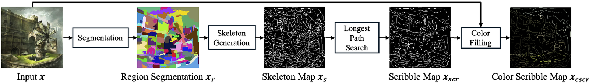

DetFill-with-DHT: Deterministic Hints and Hint-AUC for Line Art Colorization


Official implementation of "Hint-AUC: Deterministic Region-based Hint Generation for Line Art Colorization Evaluation", IEEE Transactions on Visualization and Computer Graphics (TVCG), 2026.
Koki Madono · Yuan Mingcheng · Edgar Simo-Serra — Waseda University
Paper · Library on PyPI · Checkpoints and data · Documentation

Hint-based line art colorization is usually evaluated with random colour hints, so scores change from run to run.
This repository provides DHT, which derives fixed scribble and dot hints from the regions of an illustration;
Hint-AUC, one score over the whole range of hint ratios, from no hints to fully hinted; and DetFill, a
pixel-space diffusion colorization model trained with these hints. The paper's checkpoints, evaluation inputs,
per-ratio metric files and experiment scripts are released; the
coverage table says what is rebuilt exactly, what is re-run
and what is not provided. The stored hint maps are the reference for every printed number: regeneration with the
paper's FilFinder path can move a few pixels between runs, the geodesic path is bit-reproducible
(details).
Getting started
- Demo, no data (10 s) —
pip install hintauc && hintauc demo. The numbers are recorded inexamples/expected_numbers.jsonand checked in CI. - Quick start on CPU —
python examples/quickstart_cpu.py(--fast: under a minute) writes hints, a reference colorization per ratio, the curves and the Hint-AUC; expected numbers in the script header. - Evaluate your own model — docs/evaluate_your_model.md: images per ratio
(
hintauc curve) or a Python function (hintauc.evaluate_colorizer). Inputs are checked before scoring; every result carries a protocol record (grid, metric backend, versions). - Installation — docs/setup.md. The library is
pip install hintauc; DetFill and the reproduction scripts use a conda environment that the scripts create. - Model zoo — checkpoints/README.md: every released file with size, SHA-256, link and paper item.
- Reproducing the paper — reproduce/README.md: Fig. 9 with one command, the Hint-AUC tables from the released metrics (322 of 324 cells), the example suite (eight of the paper's experiments on the nine example images; the coverage table lists what each item needs), full table rows, training.
- Replicability Stamp —
bash replicability/run.shreproduces Fig. 9 from a fresh checkout with no arguments; replicability/README.md, submission sheet GRSI_SUBMISSION.txt. - Reference — API reference (every function and command with an example), added features since the paper, how it works.
Quick start
pip install hintauc # "hintauc[paper]" adds torchvision + torchmetrics 1.4.0, the paper's metric backend
hintauc demo # synthetic illustration -> hints -> oracle colorizer at 8 ratios -> Hint-AUC
import hintauc
hints = hintauc.generate_hints("illustration.png", size=64) # image -> deterministic hints
color, mask = hints.at_ratio(0.10, hint_type="scribble") # hints of the largest 10 % of the regions
hints.save("out/illustration") # files in the DetFill data layout
evaluator = hintauc.Evaluator(metrics=("psnr", "lpips", "dreamsim")) # lpips / dreamsim: pip install "hintauc[perceptual]"
print(evaluator("colorized.png", "ground_truth.png")) # the paper's metrics
- Command line:
hintauc generate image.png --ratio 0.1,hintauc eval pred_dir gt_dir --metrics mse psnr ssim,hintauc curve pred_root gt_dir(Hint-AUC from one directory of outputs per ratio),hintauc demo. - DetFill inference over the ratio grid:
cd detfill && GPU=0 bash run_inference.sh scribble(detfill/README.md). - Fig. 9 from a fresh checkout:
bash replicability/run.sh(3 minutes on a GPU after a one-time setup of 10–20 minutes).
Repository structure
docs/ setup, evaluate your own model, API reference, added features, detailed explanation
replicability/ one-command reproduction of Fig. 9 (Replicability-Stamp entry point)
reproduce/ reproduction package: scripts/, examples/, expected/ (released metrics), data/, paper_experiments/
hintauc/ the library: hints.py, longest_path.py, metrics.py, auc.py, evaluate.py, demo.py, cli.py
detfill/ the DetFill model (BBDM fork): training, inference, configs
hint_generation/ original research scripts behind the library
evaluation/ original evaluation scripts
checkpoints/ model zoo: inventory of all released files with hashes
assets/ images for this page; representative image for the Replicability Stamp
License
MIT License (LICENSE); third-party components in THIRD_PARTY_NOTICES.md.
detfill/ is built on BBDM (MIT). The Danbooru2021 illustrations are not
redistributed except the nine that appear in the paper's figures (listed there, non-commercial research use only);
all other images are fetched by id from Danbooru with reproduce/scripts/fetch_originals.py.
Contributing
Contributions are welcome. See contributing and the code of conduct.
Citing
GitHub's "Cite this repository" button uses CITATION.cff; the BibTeX entry:
@article{madono2026hintauc,
title = {Hint-AUC: Deterministic Region-based Hint Generation for Line Art Colorization Evaluation},
author = {Madono, Koki and Mingcheng, Yuan and Simo-Serra, Edgar},
journal = {IEEE Transactions on Visualization and Computer Graphics},
year = {2026},
doi = {10.1109/TVCG.2026.3738401}
}